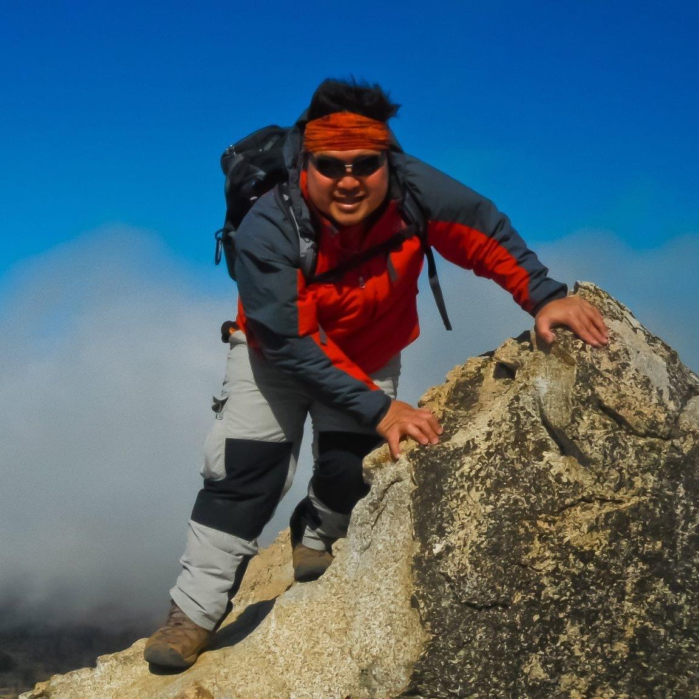

About
Frederick Dela Cruz

Frederick Dela Cruz
StoneWall Mountain, 2011.
Frederick Dela Cruz grew up surrounded by forests, coastlines, and rugged terrain, and the outdoors quickly became the backdrop of his earliest memories. Exploring nature was never a casual hobby. It was the rhythm of his childhood and the foundation of his identity. His years in the Boy Scouts and countless high school adventures through mountains, rivers, and hidden trails taught him resilience, curiosity, and respect for the natural world. These early experiences shaped the outdoorsman he is today and continue to influence the way he approaches life.
Frederick’s curiosity naturally expanded into mechanical work, which began out of necessity and evolved into a deep passion for understanding how things function. With only basic tools and determination, he taught himself to repair vehicles, diagnose complex issues, and eventually take on ambitious projects such as converting a used Sprinter van into a family camper. What started as a practical solution during the pandemic became a powerful lesson in teamwork, adaptability, and shared purpose.
His educational journey reflects that same ability to pivot and grow. Originally on a pre-med track, his life changed dramatically after relocating to Southern California. He explored several fields before earning degrees in general studies, psychology, and nursing. Over time, he recognized that the analytical thinking he developed in healthcare translated seamlessly into information technology. Today, Frederick works as an information systems analyst for a respected state university, applying structured problem-solving to complex technical systems.
Across every discipline, including IT, mechanics, building, and outdoor exploration, Frederick sees a single unifying thread: the drive to understand, improve, and create. He approaches each challenge with curiosity, patience, and calm confidence. Guided by a philosophy of continuous growth, he strives to remain a lifelong learner and a steady source of strength for his family. His goals center on health, stability, meaningful experiences, and building a life defined by resilience, simplicity, and shared adventure. Above all, he hopes to leave a legacy of capability, kindness, and memories that reflect a life lived with purpose.
“That mix of raw adventure and unpredictable terrain is exactly what defined the outdoorsman I am today.”
—Frederick